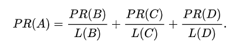
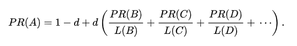
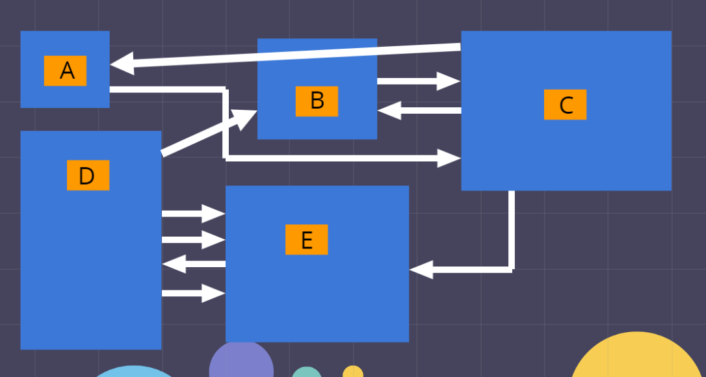
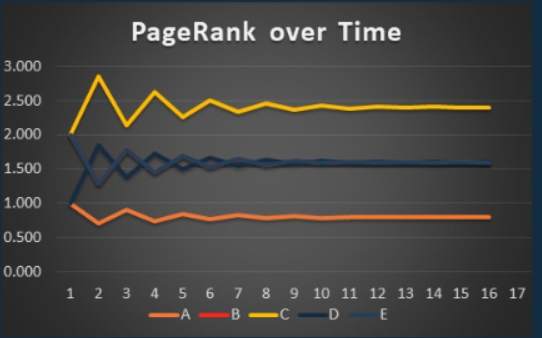

Google PageRank Algorithm
What is the Google PageRank Algorithm?
A page rank algorithm is how search engines, like Google, rank their
search results by measuring their importance.
The Google Page Rank Algorithm, founded by Larry Page and Sergey Brin while in Stanford, was
the first algorithm used by Google and was named after one of its founder
as well as web pages.
At the time of its development, there were no major search engines that were as efficient as this, paving the way
for Google to overtake the market and become the giant they are today.
It isn't the only algorithm used by Google to order search results as it
is a business secret. However, it is the most well known as the "initial
prototype of Google search".
What criterias are search results sorted by?
Typically, three factors are considered when measuring the importance/value of web pages:
- The frequency and location of the searched key word.
- How long the web page has existed.
- The number of other web pages that links to the page in question.
Google PageRank focuses on the third factor where each link going into a website
is considered a "vote" for the website's importance.
What is the simplified algorithm?

The page rank of page A is equal to the sum of other pages' page ranks
divided by the number of their outbound links going into page A.
(An outlink
or outbound link is a link going from the current page to another page while
an inlink is the opposite.)
The output of this algorithm is the probability distribution of how
likely someone is to arrive at this page.
It is important to note that each link from a page going to another is basically
considered as a vote.
The value of this "vote" varies and is identified by the page's PageRank divided by the number of their outlinks.
Therefore, a page with too many outlinks or has too little of its own PageRank will
have outlinks(votes) of little value.
This algorithm is an iterative algorithm which will be addressed later.
What is the algorithm with the damping factor?
Th theory holds that a internet surfer who is randomly clicking on links will eventually stop.
The probability that the surfer will continue is considered
the damping factor or d.
It is generally around 0.85.

The PageRank of a page is equal to the iteration of 1 minus a damping factor
plus a damping factor
times every pages' PageRank divided by their outlinks
to the initial page.
The algorithm in action
Take this example of the internet for example where each blue rectangle is a page
and each arrow is a link going from one page to another:

The application of the algorithm could be visualized with a spreadsheet.

To start, we need to identify each variable of the equation in which is list
by the first 3 rows for all 5 pages.
We need a starting value for each page's PageRank.
Normally, all initial PageRank would be one but by using the number of in-links as the initial PageRank
we can reduce the number of iterations.
It is important to note that even though there are multiple links going
from page D to E, they will only be counted as one vote.

Next, we need to find the link value of each link going from one page to another.
This is identified by the green box while the red box represents a possible link but doesn't exist.

Plug everything into the equation for every page in order to determine their new PageRank.

However, the PageRank Algorithm is a iterative algorithm.
Therefore, you need to replace the initial PageRank with your new PageRank and repeat.

Eventually, the values of each page's PageRank will stablized into a single value.
The final PageRanks are:
Page A: 0.799
Page B: 1.598
Page C: 2.403
Page D: 1.602
Page E: 1.589
with page B being the most relevant page.